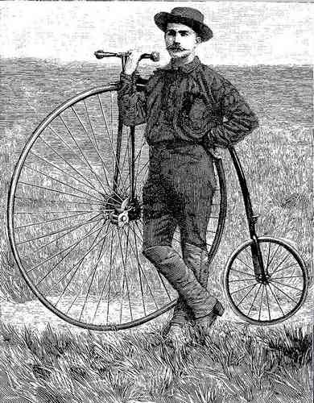

[[ Note du Traducteur : Thomas Stevens est le premier cycliste à avoir fait le tour du monde ; par la même occasion il est le premier cycliste à avoir traversé les Etats-Unis d'océan à océan ; les 4 premiers chapitres relatent sa traversée des Etats-Unis. ]]
Des Grandes Plaines Jusqu'à L'Atlantique
L'amabilité de l'officier en charge du commandement de Fort Sidney me vaut de poursuivre mon voyage vers l'est sous l'ombre appréciable d'un casque d'été militaire au lieu du chapeau mou de type semi sombrero [[ Ndt : Beaucoup des chapeaux auxquels nous ont habitués les western datent d'après le voyage de Stevens ou n'étaient pas en usage chez ceux qui parcouraient plaines et montagnes au 19ème siècle ; nous avons retenu une photo d'un chapeau couramment porté à l'époque et qui nous parait être le type de chapeau susceptible d'avoir été utilisé par Stevens. A savoir d'autre part que le chapeau le plus couramment porté à l'époque – et pas seulement en ville – était... le chapeau melon ! ]] qui me suffisait depuis San Francisco. De fait ce n'est pas sans scrupule qu'on se défait d'un vieil ami, qui m'avait épaulé contre vents et marées dans le voyage mouvementé à travers les régions montagneuses ; mais le casque blanc donne une si charmante prestance à ma figure autrement triste et désolée que je roule hors de Sidney avec un vrai sentiment d'orgueil.
Casque d'été militaire américain
C'est avec ce casque, qu'il va porter à partir de ce moment pour le reste de son voyage, qu'ont voit Stevens représenté dans l'imagerie de l'époque.
Gravure (?) publiée dans le journal Harper's Weekly du 30 août 1884
Cette image illustrait un article sur Thomas Stevens.
Elle a vraisemblablement été composée pour illustrer Stevens tel qu'au cours de sa traversée des États-Unis.
On peut supposer qu'elle est proche de la réalité.

Un des chapeaux les plus courants de la conquête de l'Ouest.
Vraisemblablement très similaire au chapeau que portait Stevens jusqu'à ce moment.
Quant au plus courant c'était en fait... le chapeau melon !
La première chose que je fais est de remplir un pauvre serpent tacheté de jaune – dont la tête est enfoncée dans le sable – d'une vive surprise , en roulant aur sa carcasse bigarée ; et seul le fait que le pneu soit de caoutchouc et non d'acier lui permet de s'en sortir indemne. Ce même soir, alors que je m'arrête pour la nuit à Lodge Pole [[ Ndt : bourgade fondée en 1867 quand le chemin de fer de l'Union Pacific a atteint ce site ]], l'occasion se présente d'observer la majesté grandiose d'un formidable orage. Sans rien qui entrave le regard, l'alpha et l'omega du spectacle sont directement observables. Le rassemblement progressif des forces se fait à proximité des Rocheuses vers l'ouest, puis la ligne d'escarmouche des petits nuages floconneux vient en éclaireur en roulant et tourbillonnant, provoquant un courant d'air qui entraîne une brusque volte-face du lourd moulin à vent du réservoir du chemin de fer et la vigoureuse rotation de ses bras géants. D'immenses éclairs électriques jouent sur le sol, remplissent l'air d'une lumière étrange, surnaturelle ; de lourdes gouttes de pluie commencent à tomber en crépitant, et, dix minutes plus tard, une pluie torrentielle et sans merci inonde les cabanes de terre des éleveurs solitaires, et, pour le moment, transforme la plaine uniforme en un lac peu profond.
Une flotte de goélettes des Prairies est ancrée dans le fond de South Platte, en attendant qu'il s'assèche, le jour suivant, et alors que je me dirige vers Ogallala je roule lentement en descendant le long de ce cours d'eau – dont chaque mile suscite l'intérêt par les réminiscences des combats des indiens et des masssacres – et un des « pélerins » prend l'air avisé comme je me rapproche et me soumet la question, « d'vez être bien boueux près avoir roulé sur vot' vélocifère, monsieur ? » « Ouais, vraiment salement boueux, » je réponds d'une voix trainante ; parce que, même si je comprends qu'il s'interroge, je n'ai pas l'intention de m'aventurer dans un exposé d'une durée imprévisible. Sept semaines de voyage à travers des territoires où le bicycle est presqu'inconnu convertiraient indubitablement le plus aimable des hommes en un menteur endurci, pour autant qu'il s'agisse de satisfaire une quelconque curiosité.
Cette après-midi je passe la première ferme, par opposition à un ranch – et consiste en une petite tente plantée près de quelques acres de prairie récemment revalorisée – sur la ligne de clôturage du grand empire agricole qui progresse sur la plaine lentement et progressivement vers l'ouest, repoussant les autocratiques rois de l'élevage et leurs troupeaux plus loin encore à l'ouest, comme les indiens et leurs troupeaux plus immenses encore – les bisons – avaient été évincés par ces derniers. Á Ogallala [[ Ndt : site fréquenté par les trappeurs, la bourgade d'Ogallala – dont le nom vient des Oglala, une branche des indiens Sioux – s'édifie en 1867 quand le chemin de fer de l'Union Pacific atteint le site ; c'est à partir de 1874 que l'activité de la ville s'intensifie alors qu'elle devient le point de rencontre des troupeaux venant du Texas par les pistes, conduits par les cow-boys, pour la suite du voyage par train. Vers 1880 la ville compte quelques boutiques, une école, un hôtel, deux pensions de famille, le Crystal Palace Saloon et 25 résidents permanents ; s'y ajoutent des dizaines de cow-boys l'été. A partir de 1880, le climat se faisant plus dur – sécheresse, hivers rudes – le commerce de bétail se voit trés affecté et la période dorée se termine pour Ogallala ; en juillet 1884, soit quelques semaines après le passage de Stevens une fièvre épidémique touchant le bétail et venant du Texas en terminera définitivement avec la ville comme centre de rassemblement des cow-boys. Sources : University of Nebraska https://goo.gl/K14rtH et keithcountyne.gov https://goo.gl/vB1Bs3 ]] – qui quelques années seulement auparavant était le point de rassemblement par excellence des cow-boys – « terres », « droits de bucheronnage » et « préemption » constituent maintenant les sujets d'actualité.
Ogallala
« les Plattes sont taries depuis que les hoosiers s'en sont occupés, » pense à voix haute et avec désapprobation un cow-boy bronzé à la table du souper à l'hôtel [[ Ndt : Platte county est un comté de l'État du Nebraska. Hoosier est un terme qui depuis environ 1830 voire avant désigne les habitants de l'Indiana ; c'est une dénomination populaire et qui n'a pas de caractère péjoratif. Le cow-boy fait vraisemblablement allusion à l'installation précoce de colons de l'Indiana dans la région des rivières Platte ]] ; et, vu de sa position, il est dans le vrai.
Après avoir passé la nuit suivante dans une chambre fournie par un fermier, à la fourche des rivières North Platte et South Platte, je passe au matin devant le ranch d'habitation [[ Ndt, en anglais : home ranch ]] de Buffalo Bill ( l'endroit où le propriétaire d'un ranch réside en personne est dénommé le « ranch d'habitation » en opposition au « ranch » lequel est présidé seulement par des employés), laquelle maison et ses perfectionnements sont renommés être les plus modernes de l'ouest du Nebraska [[ Ndt : Buffalo Bill est une figure mythique de la conquête de l'Ouest ; guide de l'armée, cavalier du Pony Express, chasseur de bisons, directeur d'une troupe de spectacle recréant l'atmosphère du Vieil Ouest américain, le Buffalo Bill's Wild West qui contribuera à la naissance du mythe du Far West. Source : Wikipedia https://goo.gl/RUaUyT ]]. Pour dîner à North Platte [[ Ndt : ville située à la confluence des rivières North Platte et South Platte ; elle a été fondée en 1868 lorsque le chemin de fer de l'Union Pacific a atteint ce site. ]], je traverse un important pont pour chariots [[ Ndt : wagon-bridge en anglais ; les ponts ainsi dénommés à cette époque ont généralement une structure en poutrelles d'acier qui s'élève autour de la voie de circulation ]], enjambant le cours d'eau jaune et gonflé juste en dessous, où les cours nord et sud se joignent, et continuent vers l'est sous le nom tout simplement de « la Platte », et j'atteins Brady Island pour la nuit [[ Ndt : dénommé Brady de nos jours, ce village a été fondé vers 1860 avec l'arrivée du chemin de fer de l'Union Pacific, et consistait essentiellement en tentes et cabanes en terre ; il s'est développé véritablement à partir de 1889 ]].
Buffalo Bill et le chef indien Sitting Bull.
Photo de 1885
exemple de wagon bridge
Brady vers 1920
Ici, je rencontre des difficultés extraordinaires à obtenir le souper. Quatre familles, qui représentent le pouvoir de l'Union Pacific à cet endroit, tous vivant dans des maisons individuelles, constituent la population de l'île Brady. « Tous nos gens commencent seulement à se remettre de la fièvre scarlatine, » est la réponse à ma première demande ; « Muvver est descendu à l'jardin dl'ile, et n'avons pas d'fournée d'pain prête », dit un jeune homme aux pieds nus à la maison n°2 ; « M'vieille femme est chez l'voisin, et y a pas d'bouffe d'cuite dans l'cabane, » répond le propriétaire du n°3, assis sur le seuil, tirant vigoureusement sur la traditionnelle pipe courte en terre [[ Ndt : pipe courte en argile (appellée aussi cutty pipe, cutty signifiant court) souvent fumée par des travailleurs manuels qui la fumaient tout en travaillant ]] ; « Sommes tous allé fair'une visite à North Blatte, et sommes juste d'retour avec rien d'cuisiné » est le sombre programme qui s'annonce au n°4. J'hésite sur l'opportunité de me glisser quelque part, sans souper, pour la nuit, ou pousser plus loin dans l'obscurité, quand un, « Ça m'est égal, pa ! C'est une honte qu'un étranger arrive ici où il y a quatre familles et doive s'en aller sans souper, » résonne à mes oreilles, d'une voix tremblante et musicale. C'est la fille convalescente de la maison n°1, en train de défendre vaillamment ma cause ; et fait si bien qu'elle réussit que son « pa » se montre, et nonobstant mes protestations, insiste pour préparer le meilleur repas qu'ils aient jamais cuisiné.
Les fermes deviennent maintenant plus fréquentes, des bosquets de jeunes peupliers, représentant des droits de bûcheronnage, apparaissent de temps à autres, et l'hébergement dans les maisons-de-service n'est plus que du passé. Près de Willow Island je manque de peu de rouler sur un serpent à sonnette vindicatif, et en un instant ses crocs mortels sont accrochés à l'une des guêtres de toile épaisse que je porte. Si mes mollets avaient été seulement délicatement enveloppés dans des bas de cycliste, j'aurais eu un « pied salement malade » [] Ndt : allusion à sa rencontre avec un indien Washoe blessé au pied, au début du 2ème chapitre, et qui lui avait fait cette réponse quand Stevens l'avait questionné sur sa blessure : « pied salement malade » ]] pour me distraire pendant les trois prochaines semaines, bien que de nos jours il y ait peu de risque d'être « refroidi » entièrement suite aux faveurs d'un serpent à sonnettes ; un remède souverain consiste à boire beaucoup de whisky le plus rapidement possible après avoir été mordu, et le whisky est l'une des choses les plus faciles à obtenir dans l'Ouest. Pour faire comprendre à sa serpentitude que je n'apprécie pas ses « bonnes intentions », je déverse sur lui toutes mes récriminations en le secouant vigoureusement et je le transforme rapidement en une « sainte-nitouche » ; car si « le seul bon indien est un indien mort, » la même remarque laconique s'applique certainement plus vigoureusement à ce crotale vicieux et létal. A mesure que je progresse vers l'est, les maisons de terre et les abris de fortune se font moins fréquents, et des écoles largement espacées apparaissent pour me rappeller que je traverse une région civilisée. Tout en bas de la Platte [[ Ndt : la rivière Platte ]] des bandes de sable alternent avec des routes praticables. Souvent je dois brinquebaler à la limite le long de passages étroits entre deux ornières béantes, sur un terrain très irrégulier. Je considère comme un jour de chance celui qui passe sans que s'ajoutent encore à ma liste déja longue et mouvementée une ou plusieurs chutes tête en avant, et aujourd'hui, je suis presque « désarçonné » par une rafale de vent qui me prend au dépourvu et nous souffle presque par-terre moi et le bicycle.
A l'est de Plum Creek [[ Ndt : il s'agit maintenant de Lexington ; en 1889 les habitants ont voté pour changer le nom de la ville, Plum Creek ne leur semblant pas un nom digne pour une ville (on pourrait traduire Plum Creek par Rivière Prune). Plum Creek a été fondée en 1866 à l'arrivée du chemin de fer de L'Union Pacific, elle comptait environ 1300 habitants en 1884, année du passage de Thomas Stevens. Il y avait à l'époque un important club bicycliste à Plum Creek... Source : https://goo.gl/3Z1nwf ]] je rencontre plus de voies cyclables, mais il s'agit encore de rien de plus que de pistes de chariots bien dégradées qui traversent la plaine, et en croisant des attelages en route vers l'ouest l'un doit laisser et l'autre prendre afin de passer. C'est sans aucun doute la méconnaissance des possibilités d'un cycliste, plutôt qu'une nature malveillante, qui fait ces conducteurs d'attelages oublieux du précepte « il est préférable de donner que de recevoir » ; si l'ignorance élève à la béatitude, un groupe que j'ai croisé aujourd'hui rassemble certainement les mortels les plus heureux de la création. Près de Elm Creek [[ Ndt : village fondé en 1866 lors de la construction du chemin de fer de L'Union Pacific dans le comté de Buffalo ; elm signifie orme, arbres qui poussaient dans une crique près des logements des constructeurs du chemin de fer, lesquels ont donné le nom d'Elm Creek au site qui par la suite s'est développé en village. Source : https://goo.gl/rnuC30 ]] je rencontre une colonne de « goélettes » [[ Ndt : rappellons que les chariots des colons étaient surnommés « prairie schooners » goëlettes des prairies ]], dont les conducteurs se refusent à reconnaître mon droit à l'une des deux voies ; et dans mon effort pour passer sur le sol irrégulier, je suis récompensé par une peu glorieuse chute tête en avant par-dessus le guidon. Une douzaine de faces d'arkansasais couverts de taches de rousseur regardent mes mouvements avec un étonnement non dissimulé ; et quand ma personne déconfite se retrouve étalée sur la prairie, ces visages « tous sans exception » prennent la forme de sourires épanouis, et une voix féminine glapissante provenant du plus proche chariot, s'écrie: « Dites donc ! C'est plutôt là une machine risquée pour voyager, et vraiment, si c'est de cette façon qu'ils s'arrêtent, j'me demande s'ils ne se cassent pas tous les satanés os de leur corps ! » Toutes sortes de gens se retrouvent mêlées par ici, car, peu de temps après cet incident, deux jeunes hommes sortis d'un abri de fortune arrivent en courant à travers la plaine, et s'avèrent être diplômés d'universités de « the Hub » [[ Ndt : the Hub est l'un des surnoms de Boston, ville de l'est des États-Unis, et une des plus anciennes villes des États-Unis, centre économique et culturel, connue pour l'excellence de ses universités ; ce surnom vient d'une oeuvre de 1859 de Oliver Wendell-Holmes, The Autocrat of the Breakfast-Table, une de ses premières oeuvres célèbres, et où un personnage dit de Boston qu'elle est le centre de l'Univers (The Hub of the Universe ; expression qui a été abrégée en "The Hub"). The Autocrat of the Breakfast-Table sur le projet Gutenberg : https://goo.gl/WDs0QB ]], qui sont en train de se faire des racines dans la prairie ici dans le Nebraska, préférant la vie libre et indépendante d'un fermier de l'Ouest aux contraintes d'une situation dans les bureaux de l'Est. Ils sont plus au fait des choses du cyclisme que moi, et, ayant entendu parler de mon voyage, ont été à l'affût, s'attendant à ce que je passe par ici.
Plum Creek en 1900
A Kearney Junction [[ Ndt : petite ville du Nebraska qui a commencé à s'édifier en 1871 et qui compte 10000 habitants en 1880, grâce à sa position géographique qui attire de nombreux investisseurs et entrepreneurs et lui vaut l'installation du premier tramway électrique du Nebraska. La fermeture du moulin de coton provoque un choc économique dans la ville qui en 1890 ne compe plus que 5634 habitants. Kearney Junction est située à égale distance entre l'Océan Atlantique et l'Océan Pacifique, ce qui lui vaut d'être souvent appellée the "Midway City", la Ville du Milieu. Source : https://goo.gl/VLGQQi et https://goo.gl/hghF73 ]] les routes sont excellentes, et tout est à l'avenant ; mais après une heure de route à l'est de cette ville je suis choqué par la grossière méprise d'un jeune mulet vigoureux et vociférant qui est confiné seul dans un pâturage, problablement pour être sevré. Il confond évidemment la pittoresque combinaison de l'homme et de la machine avec sa mère, alors que, nous voyant approcher, il assume une expression anxieuse et assoiffée, élève sa voix sans mélodie et s'efforcer de sauter la clôture. Il me suit sur toute la longueur de son pâturage, et quand il arrive au bout, et réalise que je suis en train de m'éloigner de lui, peut-être à jamais, il brait dans une agonie de douleur et d'anxiété, et, sautant témérairement à travers la clôture, vient en pleurant le long de la route, remplissant l'air des notes discordantes de sa musique qui m'en bouleverse l'âme. La route est excellente pendant un moment, et je le devance à bon train, mais finalement il me dépasse, et, comme je ralentis, il me distance en trottinant avec un air très satisfait.
Kearney Junction en 1900
A l'est de Kearney les maisons de terre disparaissent complètement, et les améliorations sont d'un caractère plus substantiel. A Wood River je m'incline [[ Ndt : l'expression qu'emploie ici Thomas Stevens est " I make my bow " qui signifie s'incliner respectueusement, comme marque de respect, ou pour prendre congé etc... ]] devant la première pousse de bois naturel depuis que j'ai laissé les montagnes, ce qui indique que je progresse vers la fin des grandes plaines rases. En passant par Grand Island, Central City, et d'autres villes, je me retrouve retenu un samedi soir, le 14 Juin [[ Ndt : rappellons qu'il s'agit de l'année 1884 ]], à Duncan [[ Ndt : ville fondée en 1871 sous le nom de Jackson, là encore avec l'arrivée du chemin de fer de l'Union Pacific ; parmi les premiers arrivants se trouvaient des Polonais et des Suisses. En 1880 la ville a changé son nom de Jackson à Duncan du fait de l'existence d'une ville déja nommée Jackson dans le Dakota. ]] – une implantation de Polonais – un rassemblement de gens au coeur sincère, qui semblent parfaitement comprendre la capacité digestive d'un cycliste, bien que n'entendant strictement rien à quoi peut servir ma machine. Je reprends mon voyage le lendemain matin, et je trouve les routes agréables. Après avoir traversé la rivière du Loup, et être passé par Columbus, je roule dans la campagne et arrive – à environ 11 heures – à une maison qui fait office d'école, où un rassemblement d'agriculteurs traînent dehors à proximité, en attendant l'arrivée du pasteur pour ouvrir la réunion. Descendant du bicycle, je suis occupé à répondre à quarante questions ou à peu près jusqu'au moment où cette pieuse personne arrive au petit galop, et, descendant de son canasson, s'avance et se joint à la conversation. Il m'invite à faire escale pour la nuit et à écouter le sermon ; quand je le prie de m'excuser parce que je souhaite pousser plus loin en avant pendant que le temps est favorable, Sa Révérence me met en garde solennellement de ne pas profaner le Sabbat en allant plus loin que ce que permet le « voyage du jour du Sabbat » [[ Ndt : il s'agit de la distance de 2000 coudées - environ 915 mètres - que, sous la loi rabbinique, un juif était autorisé à parcourir le jour du Sabbat ; le Sabbat est le jour de repos hebdomadaire dans l'Ancien Testament (du vendredi soir au samedi soir), décalé au dimanche dans les confessions catholique, orthodoxe et protestante ; cette loi était destinée à ce que les croyants ne s'éloignent pas du lieu de culte le jour du Sabbat et soient donc présents aux célébrations. Source : Vies des Pères, Martyrs et autres Principaux Saints, d'Alban Butler https://tinyurl.com/voyage-sabbat ]].
Duncan en 1910
À Fremont je dis adieu à la Platte – qui bifurque vers le sud et rejoint la rivière Missouri à Plattsmouth – et suis l'ancienne route militaire à travers la vallée de Elkhorn jusqu'à Omaha. « Route militaire » sonne comme une douce musique aux oreilles d'un cycliste, suggérant une route bien entretenue et de premier ordre ; mais aujourd'hui dans ce cas précis cette route militaire entre Fremont et Omaha ne parvient pas à éveiller chez moi de sensation allègre, car elle n'est presque qu'une ornière continue de boue. Elle est dénommée route militaire tout simplement parce que c'est une route autrefois parcourue par des troupes et des convois de ravitaillement à destination des forts occidentaux. Je me repose une journée à Omaha [[ Ndt : ville fondée en 1850 par des spéculateurs de l'Iowa, dès sa fondation Omaha devint un important centre économique. Source : https://goo.gl/E17iRG .Certains qui lisent ce voyage depuis le début se souviendront peut-être que dans les premières pages du premier chapitre Thomas fait halte à Davisville où il fait renforcer ses chaussures par un cordonnier, qui lui assure qu'elles lui dureront jusqu'à Omaha ]], j'obtiens la permission d'aller traîner ma roue [[ Ndt : en anglais "wheel" (roue) est un terme populaire pour désigner le bicycle (grand-bi), cycle qui consiste principalement en une très grande roue avant ! ]] sur le pont de l'Union Pacific, qui enjambe la rivière Missouri – « Big Muddy » vers laquelle j'ai voyagé si longtemps – entre Omaha et Council Bluffs ; Je dis adieu au Nebraska, et passe dans l'Iowa [[ Ndt : Big Muddy, qu'on pourrait traduire par 'Grande Boueuse' est le surnom de la rivière Missouri, en raison de ses énormes volumes de sédiments avant sa mise en exploitation. La Missouri est le principal et le plus long affluent du fleuve Mississipi. ]].
Jusqu'à présent, j'ai omis de mentionner le temps terriblement chaud que j'ai rencontré ces derniers temps, à cause de mon incapacité à produire des éléments légalement tangibles ; mais aujourd'hui, tout en mangeant le déjeuner dans la maison d'un corps de ferme, je laisse le bicycle appuyé contre la clôture, et le bon vieux soleil décolle impitoyablement le pneu, de sorte que, quand je monte, il se détache, et me donne une leçon de gymnastique dont je me serais bien passé [[ Ndt : Le grand-bi de Thomas Stevens est équipé de pneus pleins, collés sur la jante. Ce n'est qu'en octobre 1887 que John Boyd Dunlop développera le premier pneumatique d'usage pratique, mais peu commode à réparer en cas de crevaison ; c'est en 1891 que les frères Michelin inventeront le premier pneumatique démontable avec chambre à air. ]]. Mon expérience après mon premier jour passé dans le grand « Hawkeye State » [[ Ndt : État d'Oeil de Faucon ; c'est le surnom de l'État de l'Iowa, et aurait été donné en référence à un chef indien dénommé Black Hawk (Faucon Noir). Source : https://goo.gl/Q0SDvs ]] en dit long sur l'hospitalité des gens, une rivalité s'étant élevée là entre deux fermiers voisins à propos de qui m'aurait à dîner. Un compromis est finalement conclu, par lequel je vais dîner à un endroit, et après ça je suis « rendu à la liberté » chez l'autre dans le verger de cerisiers, arrangement heureux, auquel bien sûr, je ne fais aucune objection. En contraste frappant avec ces témoignages d'amitié il y a ma propre conduite impardonnable le soir même lors d'une conversation avec un vieux et honnête fermier [[ Ndt : Honest Old Farmer, en anglais ]].
« Je vois que vous prenez des notes, je suppose que vous gardez trace des cultures que vous observez le long de votre voyage ? » dit le H. O. F.
« Certainement, je prête plus d'attention aux cultures qu'à toute autre chose, je suis moi-même né agriculteur. »
« Eh bien », poursuit le fermier, « ici où nous nous trouvons c'est le canton de Carson » [[ Ndt : en anglais Carson township ; aux États-Unis les townships sont des unités administratives à l'intérieur d'un comté, et ont une taille de 15 à 150 km². ]]
« Ah ! Vraiment ! Est-il possible que je sois enfin arrivé au Canton de Carson ? »
« Vous avez déjà entendu parler du canton avant, alors, hein? » « Entendu parler de lui ! Grand Dieu, le canton de Carson est tout ce dont on discute dans les Rocheuses ; en fait, il est connu partout dans le monde comme le meilleur canton de l'Iowa pour le maïs ! "
Ce genre de comportement est, je le reconnais, totalement injustifiable ; mais le cyclisme est responsable de tout cela. Si la pratique continue du cyclisme provoque un excès d'euphorie, et si la dite euphorie déborde parfois, c'est simplement le bicycle qui est à blâmer. Cette crise s'impose à moi avec une telle vigueur au moment où je serre la main du fermier, et le félicite pour cette rare bonne fortune d'appartenir au canton de Carson, qu'une fois monté en selle, et dans le but d'en tirer un peu d'orgueil, je descends à une vitesse formidable la colline longue et pentue qui conduit au pont qui enjambe la rivière Nishnebotene. La machine se rebelle contre ce traitement, et, à peu près à mi-pente, elle butte dans un trou et m'envoie tournant et tournoyant dans l'air ; et quand finalement je touche terra firma [[ Ndt : terre ferme ]], elle me percute les côtes avant de s'immobiliser.
« Variable » est le mot qui décrit le mieux les routes de l'Iowa ; sur soixante-quinze miles à l'est de Omaha la prairie me voit passer tel une puissante houle de l'Atlantique, et pendant ce voyage d'un jour, je traverse par alternance une douzaine de tronçons de route boueuse et déplorable ; car comme le ferait un grand arrosoir, les nuages de pluie passent çà et là sur ce grand jardin de l'Ouest, qui est pratiquement une ferme fertile en continu du Missouri jusqu'au Mississippi.
Je passe à Des Moines en date du 23 [[ Ndt : 23 juin 1884 ]] ; routes boueuses et temps chaud et orageux marquent mon voyage à travers l'Iowa Central, agacé par la question inévitable : « Pourquoi vous ne roulez pas ? » me demande un individu au visage de Solomon, questionnant si c'est parce que la compagnie de chemin de fer ne me permet pas de rouler sur un des rails. Sans aucun fondement, d'indignes soupçons sur l'aptitude du cycliste à rouler sur un rail de deux inches de large (5 cm), naissent dans l'esprit de ce pédant ; mais son coeur compatissant est ému de tendre sollicitude à la question de savoir si la « corporation » (la compagnie de chemin de fer) sans âme le permettrait ou non. Je traverse avec un empressement timoré Grinnell – la ville qui a été sérieusement démolie et éparpillée dans toute la région environnante par un cyclone en 1882 – et je fais une pause à Victor [[ Ndt : village édifié en 1860, et qui se nommait alors Wilson, du nom du propriétaire du site. ]], où je trouve les habitants très exaltés par la perspective de la construction d'une nouvelle prison, grâce aux amendes infligées la nuit aux ouvriers employés sur un nouveau chemin de fer à proximité, qui viennent en ville et « épanouissent » toutes les soirées.
Victor en 1870
« Comment appellez-vous cet endroit ? » demandé-je, en arrivant à une ville de singulière apparence, vingt-cinq miles à l'ouest d'Iowa City. « C'est South Amana, l'une des villes de la Société Amana, » me répond-on courtoisement [[ Ndt : les colonies Amana sont une zone fondée en 1855 par une communauté d'Allemands piétistes, et inspirés par une philosophie de vie communautaire ; jusque dans les années 1930 ces colonies ont conservé un système strictement communautaire. Source : https://goo.gl/n0GppA et https://goo.gl/orWTPM ]]. En réponse à mes questions, je découvre que la Société Amana est une société communautaire d'Allemands, au nombre de 15.000 âmes, et possédant 50.000 acres de terres de choix d'un seul tenant, avec des usines de laine, quatre petites villes, et la meilleure forme de crédit qui soit. Tout est bien commun, et en cas de départ ou d'expulsion, un membre n'emporte que l'équivalent de ce qu'il a apporté. Les relations domestiques sont comme partout ; et alors qu'aucune personne ambitieuse ne se satisferait de la forme de vie d'ici, les gens méthodiques, lents, insouciants qui composent cette société semblent satisfaits de leur sort, et sont peut-être plus heureux, dans l'ensemble, que la moyenne des gens de l'extérieur. Je reste ici pour le dîner, et jette un coup d'oeil alentour. Les gens, les bâtiments, la langue, la nourriture, tout, est exactement comme s'il avait été prélevé directement dans un district rural d'Allemagne, et déposé tel-quel ici dans l'Iowa. « Wie gehts » [[ Ndt : comment allez-vous (en allemand) ]], m'aventuré-je à dire, en roulant près de deux jeunes filles potelées aux joues roses, dans le pittoresque costume traditionnel de la paysannerie allemande. « Wie Gehts » [[ Ndt : ça va ]] est leur sage réponse, toutes les deux en choeur ; mais pas l'ombre d'une fossette creusée par un sourire en réponse à ma tentative malheureuse pour me le gagner. Jolies mais pas coquettes telles sont ces jeunes filles de la société communautaire d'Amana.
South Amana vers 1900
Source : The Iowa Heritage, digital collection
The Iowa Heritage
A Tiffin [[ Ndt : fondée en 1867 ; environ 50 habitants lors du passage de Stevens ]] la tranquillité de la nuit est égayée par les voix mélodieuses des engoulevents [[ Ndt : Genre d'oiseaux dont l'espèce la plus commune est vulgairement appelée crapaud volant. ]] – les premiers que j'entends de ce voyage – et leur harmonieux concert est gravé dans ma mémoire en contraste heureux avec certains autres concerts, tant vocaux qu'instrumentaux, endurés en cours de route.
Eglise de Tiffin en 1869
Engoulevent
Source https://tiffinia.wordpress.com
Je passe à Iowa City [[ Ndt : ville créée en 1839 selon le souhait du Gouverneur de l'État D'Iowa de rapprocher la capitale du centre du dit État - jusqu'à cette date la capitale était Burlington. En 1857, c'est Des Moines qui est devenue capitale de l'Iowa. Quand Thomas Stevens passe à Iowa City, la ville compte environ 7000 habitants. ]], et quand je traverse la rivière Cedar à Moscow [[ Ndt : village fondé en 1836 et qui s'est développé à partir de l'arrivée du chemin de fer en 1855 ; quand Thomas Stevens passe à Moscow, le village compte environ 260 habitants. ]] neuf jours après avoir franchi le Missouri, j'entends au loin le sifflet d'un vapeur du Mississipi.
Iowa City en 1890
Source https://goo.gl/jnEgAK
Sa voix rauque est pour moi la plus douce des musiques, annonçant le fait que les deux tiers de mon long voyage à travers le continent sont achevés. Je traverse le « Père des Eaux » sur le superbe government bridge [[ Ndt : Government Bridge, ou Arsenal Bridge, est un pont qui franchit le Mississipi et relie Davenport dans l'Iowa à Rock Island dans L'Illinois ; achevé en 1856, ce fut le premier pont de chemin de fer à franchir le Mississipi ]] entre Davenport et Rock Island, et j'entre dans l'Illinois. Sur plusieurs miles ma route est une extension du fond du fleuve Mississippi, essentiellement des chemins de sable ; mais près de Rock River, le sable disparaît, et, sur une certaine distance, une excellente route serpente à travers les chênaies qui bordent ce beau fleuve. Les jeunes bois sont libres de taillis, et un fond de fraîcheur se glisse au milieu des ombrages, qui, peut-être pas parfaits, n'en sont pas moins appréciables, car il fait plus de 100 degrés au soleil [[ Ndt : il s'agit de degrés farenheit, soit environ 37 degrés celsius ]] ; au-delà, l'éclat argenté de la rivière luit à travers les interstices ; le chant mélodieux des cloches d'églises me parvient comme s'il suivait la brise sur le flot de la rivière, semblant annoncer, avec sa douce voix, paix et bienveillance pour tous. Rock River, avec ses 300 yards [[ Ndt : 274 mètres ]] de largeur, sans pont pour franchir les eaux, empêche maintenant mon passage, et le ferry est amarré sur l'autre rive. « Whoop-ee », crie-je à la cabine du pilote en face, mais sans recevoir de réponse. « Wh-o-o-p-e-ee » répète-je d'une voix aimable, courtoise – d'une forme que j'ai apprise il y a deux ans à la réserve Crow dans le Montana, et qui forme un tourbillon dans l'atmosphère ambiante comme un prolongement de la musique des cloches – mais n'a aucun effet sur le pilote du ferry insensible dans sa cabine ; il ne prête aucune attention jusqu'à ce que ma voix persuasive soit accompagnée par les voix de deux nouveaux arrivants dans une carriole, et qu'enfin il manoeuvre sans précipitation et nous fasse traverser. Je roule sur des routes plutôt ordinaires, entre des fermes dont l'acre vaut dans les 100 dollars, je passe par l'élégante ville de Geneseo, [[ Ndt : bourg d'environ 3500 habitants lors du passage de Stevens, fondé en 1836 par des colons de l'Église Congrégationniste (branche de l'Église Protestante) originaires des villes de Geneseo et de Bergen dans l'État de New York. Geneseo est communément appelée Geneseo la Victorienne, en raison de ses nombreux édifices de style victorien, ses nombreux parc etc... Source : https://goo.gl/DKJh0o ]] m'arrête pendant la nuit à Atkinson [[ Ndt : village d'environ 500 habitants lors du passage de Stevens ]], et reprends mon voyage le lendemain matin à travers une région abondante de tout ce qui fait les gens sinon heureux, en tout cas prospères.
Geneseo en 1885
Source https://goo.gl/5JThsu
Par ici on donne de jolis noms aux sites, par exemple sur ma gauche je passe « la Plaine Rose bordée par la Rivière Verte ». Je fais mon entrée dans le comté de Bureau, où je trouve de splendides routes de terre battue, et passe une heure des plus agréables avec le joyeux Club Bicycliste [[ Ndt : rappelons qu'à cette époque les cycles sont des bicycles, terme désignant alors les grand-bi ]] de Princeton [[ Ndt : ville fondée vers 1830 par des colons venant de Nouvelle-Angleterre, descendants des Puritains anglais ; la plupart étaient membres de l'Église Congrégationnaliste. Princeton comptait environ 3400 habitants lors du passage de Stevens ]], siège du comté de Bureau. Je pousse sur Lamoille pour passer la nuit, où l'entreprenant barbier du village me pousse dans sa boutique cosy et ce sont rasage, shampooing, coupe de cheveux, lotions de Cologne, et autres manipulations, pour le plus grand bien de mon apparence personnelle, et tout ça, selon ce qu'il dit, rien que pour l'honneur d'avoir moussé le menton du « grand et unique . . . » En fait, les Illinois semblent être d'excellentes gens.
Princeton, 19ème siècle
Lamoille, 19ème siècle
Page précédente - Page suivante
ADMINISTRATIVIA
Dernière mise à jour de cette page : 10 juin 2019
URL : https://orkic.github.io/bicygonzo/atwoab/chap4/index.html
Contactez-nous : Contact
Website © Copyright - ef. Bicy Gonzo.